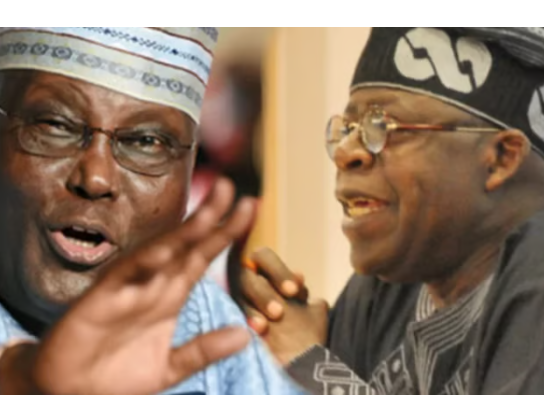

Nigeria - National & States · 22 Sep 2026
Atiku Urges Tinubu to Adopt Petrol Price Reduction Proposal, Cites Survey Data

Former Vice President Atiku Abubakar has called on President Bola Tinubu to adopt his proposed market intervention to lower petrol prices and alleviate the high cost of living, referencing recent survey findings on public sentiment.
Former Vice President Atiku Abubakar has urged President Bola Tinubu to adopt his proposed market intervention to lower petrol prices and alleviate the high cost of living, referencing recent survey findings on public sentiment. In statements issued through his camp, including comments conveyed via The Reporter Media and a release by his Senior Special Assistant on Public Communication, Phrank Shaibu, Atiku pointed to survey data to justify his policy recommendations.
Survey Data and Public Sentiment
The call follows findings from the second wave of the Nigeria 2027 Voter Sentiment Tracker by SBM Intelligence, titled Nigeria 2027: A Narrower Race, which was covered by The Punch. The research involved face-to-face interviews with 1,103 eligible voters across 12 states and the Federal Capital Territory, representing all six geopolitical zones across urban and rural locations. The survey indicated that 67.4 per cent of respondents support the restoration of petrol subsidies. Furthermore, petrol was cited as the second-most prominent national problem and the Tinubu administration's worst-rated policy issue, scoring 1.69 out of four. Regional breakdowns showed petrol emerged as the primary concern for 32.4 per cent of rural respondents compared to 11.7 per cent in urban areas, while registering as the leading concern in the Southwest at 30.5 per cent and the South-South at 29.1 per cent.
Atiku's Proposed Alternatives and Criticisms
Atiku asserted that the high cost of petrol has strained transportation, food prices, production costs, and household purchasing power. He criticized the current administration's fuel removal approach, arguing that it lacked strategic planning for domestic refining, mass transit, and wage protection. He suggested that President Tinubu could rename his proposed intervention framework and take political credit for it if it successfully reduces consumer costs.
As an alternative framework to be introduced if elected in 2027, Atiku outlined a transparent production subsidy specifically targeted at petroleum products refined domestically and sold within Nigeria, excluding imported products. He noted the scheme would feature a fixed spending limit, require National Assembly approval, and undergo independent audits. Additionally, Atiku cautioned the Federal Government against phasing out electricity subsidies planned for 2027 without first addressing the potential adverse impacts on vulnerable households and manufacturers.
Sources
This article was produced by the C. O. Eric AI Newsroom from the cited sources. It is published only after automated evidence and safety checks.